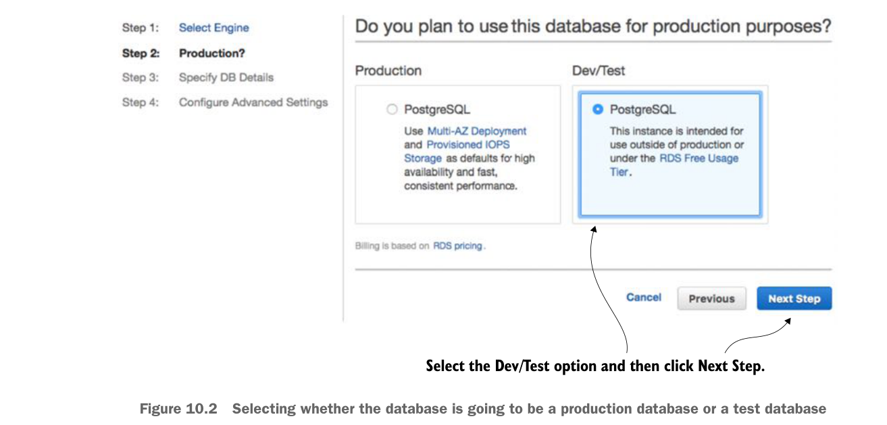

10.1.1 Tạo cơ sở dữ liệu PostgreSQL bằng Amazon RDS
Trước khi bắt đầu mục này, bạn cần thiết lập và cấu hình tài khoản Amazon AWS của mình. Sau khi hoàn tất, nhiệm vụ đầu tiên là tạo cơ sở dữ liệu PostgreSQL mà bạn sẽ dùng cho các dịch vụ EagleEye. Để làm điều này, bạn sẽ đăng nhập vào bảng điều khiển Amazon AWS (https://aws.amazon.com/console/) và thực hiện như sau:
- Khi lần đầu đăng nhập vào bảng điều khiển, bạn sẽ thấy danh sách các dịch vụ web của Amazon. Tìm liên kết có tên RDS. Nhấp vào liên kết đó để vào bảng điều khiển RDS.
- Trên bảng điều khiển, bạn sẽ thấy một nút lớn ghi “Launch a DB Instance.” Nhấp vào nút đó.
- Amazon RDS hỗ trợ nhiều công cụ cơ sở dữ liệu khác nhau. Bạn sẽ thấy danh sách các cơ sở dữ liệu. Chọn PostgreSQL và nhấp nút “Select”. Thao tác này sẽ mở trình hướng dẫn tạo cơ sở dữ liệu.
Việc đầu tiên trình hướng dẫn tạo cơ sở dữ liệu của Amazon hỏi bạn là đây là cơ sở dữ liệu production hay cơ sở dữ liệu dev/test. Bạn sẽ tạo cơ sở dữ liệu dev/test dùng free tier. Hình 10.2 minh họa màn hình này.
